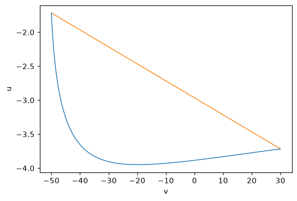

Getting started#
Installation#
mappy-ds requires Python 3.11 or newer and depends on NumPy, SciPy and SymPy. Install it from PyPI:
pip install mappy-ds
The plotting helpers in mappy_ds.plot additionally need matplotlib,
which is pulled in by the plot extra:
pip install "mappy-ds[plot]"
The import name is mappy_ds:
import mappy_ds
print(mappy_ds.__version__)
Note
Do not pip install mappy: that PyPI name belongs to an unrelated
project.
A five-minute tutorial#
We build the Poincaré map of the Izhikevich spiking-neuron model, evaluate it with its derivatives, find its fixed point and follow the fixed point along a parameter. The code on this page is executed when the documentation is built.
The model#
The Izhikevich neuron has a membrane potential \(v\) and a recovery variable \(u\):
and fires when \(v\) reaches \(30\); the state then jumps to
The flow is smooth and the jump is smooth, but the system as a whole is not. mappy-ds treats each smooth piece as a mode and composes them. As the Poincaré section we take the firing threshold \(v = 30\) itself: the state on the section is described by \(u\) alone, so the Poincaré map is a one-dimensional map \(u_k \mapsto u_{k+1}\) from one spike to the next.
Step 1 — the vector field#
A vector field is a plain Python function f(y, p) of the state y and a
parameter mapping p, decorated with vector_field(). The
decorator needs the state dimension and the names of the parameters the
function reads:
import numpy as np
from mappy_ds import (ContinuousMode, DiscreteMode, PoincareMap,
border, mapping, vector_field)
@vector_field(dim=2)
def izhikevich(y, p):
v, u = y
return np.array([0.04 * v**2 + 5 * v + 140 - u + p["I"],
p["a"] * (p["b"] * v - u)])
The function is traced once with SymPy symbols; that is how its Jacobian and
Hessian are obtained (see Jacobian and Hessian tensor). Write it with
arithmetic operators and SymPy functions (sympy.cos, not numpy.cos).
Step 2 — the border#
A continuous mode integrates the vector field until a border function
crosses zero. Firing happens when \(v - 30\) crosses zero from below,
which is the default direction (direction=1) of border():
@border(dim=2)
def fire(y, _):
return y[0] - 30
Step 3 — the jump#
Discrete maps are declared with mapping(). On the threshold
\(v = 30\), the reset \((v, u) \mapsto (c, u + d)\) is a translation:
@mapping(2)
def firing(y, p):
return y + np.array([p["c"] - 30, p["d"]])
Step 4 — reducing to the section#
The Poincaré map should act on the section coordinate \(u\) only. Two more
discrete maps change the dimension: reduce projects
\(\R^2 \to \R\) and revert embeds \(u\) back into the plane at
\(v = 30\). mapping(dom_dim, cod_dim) takes the two dimensions:
@mapping(2, 1)
def reduce(y, _):
return np.array([0, 1]) @ y
@mapping(1, 2)
def revert(u, _):
return u * np.array([0, 1]) + np.array([30, 0])
Step 5 — modes and transitions#
A ContinuousMode wraps a vector field and its borders; a
DiscreteMode wraps a map. Every mode has a unique name.
The transitions say which mode follows which: a discrete mode has one
successor (a string), a continuous mode has one successor per border (a
list, in the order of borders):
modes = [
ContinuousMode("A", izhikevich, borders=[fire]),
DiscreteMode("B", firing),
DiscreteMode("P", reduce),
DiscreteMode("Pinv", revert),
]
transitions = {"A": ["P"], "B": "A", "P": "Pinv", "Pinv": "B"}
The resulting mode graph is a single loop:
Pinv ──▶ B ──▶ A ──(fire)──▶ P ──▶ Pinv
(u ↦ (30, u)) (reset) (flow) ((v, u) ↦ u)
Step 6 — the Poincaré map#
PoincareMap starts in initial_mode and follows the
transitions until it reaches an end mode (by default the initial mode
again). That is one iteration of the map:
pmap = PoincareMap(modes, transitions, initial_mode="Pinv")
params = {"a": 0.2, "b": 0.2, "c": -50.0, "d": 2.0, "I": 10.0}
Step 7 — evaluating the map#
image_detail() returns a
MapResult holding the image, the Jacobian matrix (computed
by default) and, on request, the Hessian tensor:
>>> res = pmap.image_detail(-3.0, params, hessian=True)
>>> res.y
array([-3.47838496])
>>> res.jac # jac[i, j] = ∂y_i / ∂y0_j
array([[0.27080374]])
>>> res.hes # hes[i, j, k] = ∂²y_i / ∂y0_j ∂y0_k
array([[[-0.19325909]]])
>>> res.mode_history
['Pinv', 'B', 'A', 'P', 'Pinv']
>>> res.eigvals # eigenvalues of jac (characteristic multipliers)
array([0.27080374+0.j])
The scalar input -3.0 was promoted to a state of length one. The
mode_history lists every mode visited, from the initial mode to the end
mode. For the image only, use pmap.image(y0, params, n=...); for several
iterations pass n.
Step 8 — the fixed point#
A periodic point solves \(T^n(u) = u\). find_cycle()
solves it with scipy.optimize.root(), using the analytic Jacobian of the
map:
>>> from mappy_ds.root import find_cycle, trace_cycle
>>> cycle = find_cycle(pmap, -3.0, params)
>>> cycle.success, cycle.y, cycle.eigvals
(True, array([-3.71591625]), array([0.38565236+0.j]))
The multiplier \(\mu \approx 0.38566\) lies inside the unit circle, so the periodic spiking is stable.
Step 9 — continuation#
trace_cycle() sweeps a parameter linearly and calls
find_cycle() at each value, starting from the previous
solution. Each step is a ContinuationStep with
y, params and info (multipliers etc.):
>>> steps = trace_cycle(pmap, cycle.y, params, "I", 5.0, resolution=11)
>>> for s in steps[::2]:
... print(f'I = {s.params["I"]:4.1f} u* = {s.y[0]:8.5f} '
... f'mu = {s.info["eigvals"][0].real:+.5f}')
I = 10.0 u* = -3.71592 mu = +0.38565
I = 9.0 u* = -4.16172 mu = +0.31666
I = 8.0 u* = -4.64542 mu = +0.22196
I = 7.0 u* = -5.17810 mu = +0.08191
I = 6.0 u* = -5.77689 mu = -0.15065
I = 5.0 u* = -6.47001 mu = -0.62295
The multiplier decreases towards \(-1\) as \(I\) decreases: a period-doubling bifurcation is ahead. Locating and following it is the topic of Periodic points, bifurcations, continuation.
Step 10 — plotting#
With matplotlib installed, plot_trajectory() draws a
Trajectory on an Axes. Modes contribute trajectory
segments if in_trajectory is true (the default for continuous modes);
here the reset B is also included so that the jumps appear as straight
lines:
from mappy_ds.plot import LineStyle, plot_trajectory
modes[1] = DiscreteMode("B", firing, in_trajectory=True)
pmap = PoincareMap(modes, transitions, initial_mode="Pinv")
traj = pmap.trajectory(cycle.y, params, n=1)
ax = plot_trajectory(traj, styles={"A": LineStyle("tab:blue", 1.0),
"B": LineStyle("tab:orange", 1.0)})
ax.set_xlabel("v")
ax.set_ylabel("u")

For interactive exploration, plot2d() iterates a map
forever, draws each iteration and lets you click new initial points and
change parameters from the keyboard:
from mappy_ds.plot import PlotConfig, plot2d
plot2d(pmap, cycle.y, params,
PlotConfig(xlim=(-80, 40), ylim=(-12, 2), xlabel="v", ylabel="u",
param_keys=["I", "a"], scalar_axis="y"))
See Plotting for the controls.
Next steps#
Concept of modes explains modes, borders and transitions in depth.
Working examples lists the example scripts shipped in the repository.
The API reference documents every public object.